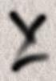
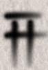
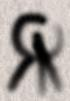
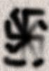
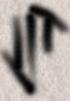

|
Ritual for summoning Yog-Sothoth and
opening the Gate
Banishing:
(could be replaced with other banishings. Uses Salt, water and
incence.)
Zazii, Zamaii, Puidmon the Powerful,
Sedon the Strong, El, Yod, He,
Vau, He,
Iah, Agla, protect me and help me when I summon the Gate!
(light incense and candles)
No evil may approach from the North!
No evil may approach from the
East!
No evil may approach from the South!
No evil may approach
from the West!
No evil may approach from Zenith!
No evil may
approach from Nadir!
(bow towards the directions)
The Flaming Circle locks everything in!
Draba, draba, kalta, kalta,
entemoss!
The Flaming Circle locks everything out!
Draba, draba,
kalta, kalta, entemoss!
Accar, Zour and Maroud! Lock the circle and
let no evil pass through!
Draba, draba, kalta, kalta, entemoss!
(participants walk round the circle. Salt, water and incense is
sprinkled)
The
Summoning:
Per Adonai Elohim, Adonai Jehova
Adonai Sabaoth, Metraton Ou Agla
Methon,
Verbum Pythonicum, Mysterium Salamandrae
Cenventus
Sylvorum, Antra Gnomorum
Demonia Coeli God, Almonsin Gibor
Jehoshua Evam Zariathnatmik, Veni, Veni, Veni!
(Put your hands above your head, with the thumbs and index fingers
together so they create a equilateral triangle. Turn the right hand
so its halve of the triangle points down, creating a paralellogram.
Turn the left hand, creating a downwards pointing triangle. Move it
down to your forehead, turning it upwards, so the final result is a
triangle on your forehead.)
Hear me!
King of Infinite Space!
Planetmover!
The
Foundation of Fastness!
Ruler of Earthquakes!
The Vanquisher of
Terror!
The Creator of Panic!
Destroyer!
The Shining Victor!
Son of Chaos and the Void!
The Guardian of the Abyss!
God of
the Outermost Darkness!
Lord of Dimensions!
Riddle-knower!
Guardian of The Secrets!
Lord of the Labyrinth!
Master of the
Angles!
God of the Whiporwills!
Omegapoint!
Lord of the Gate!
Opener of the Way!
The Oldest!
All-in-One!
The One by Life
Prolonged!
Umr At-Tawil!
Iak-Sathath!
YOG-SOTHOTH
NAFL'FTHAGN!!!
Your servant call upon you!
(Take the staff and turn it first so it points Right-Left, then
Up-Down,
then Forward-Back. Then twist it, and visualize how it is
turned to
point into the fourth dimension, perpendicular to the other
directions.
It will show the eightrayed star of Chaos.)
Opening of the
Gate:
(The staff is held horizontally.)
Yog-Sothoth knows the Gate.
Yog-Sothoth is the Gate.
Yog-Sothoth is the key and guardian of the Gate.
Past, Present and
Future, all is one in Yog-Sothoth.
By that which is not to be named,
By Azathoth,
By Nyarlathotep,
By Shub-Niggurath,
By the two snakes,
By that which created
the Voids,
By Kadath in the Cold Waste,
By the Plateu of Leng,
By Yuggoth,
By the moon-lens,
By the inprisoned,
By the
free,
By Samas, Gibil and Nusuku,
By the High Name of Ea,
By
the Seven Demons,
Guardian, let the Gate be opened!
By Chaos,
By the Void,
By the Light,
By the Darkness,
By the Air,
By the Fire,
By the Water,
By the Earth,
Key, open the Gate!
By my sacred oath,
Let those who want to leave come out!
Let
those who want to enter come in!
Let us see intp the Hiding Light!
Let us see into the Blinding Darkness!
Rend the Veil!
Crush
the Mirror!
Reveal the Illusion!
See, the Gate opens!
(slowly turn the staff from horizontal to vertical, and make the sign
of the Rending of the Veil.)
See, the Nodes are filled with Power!
See, the Lines are filled
with Power!
See, the Angles twist and open!
Notes:
I have performed this ritual in front of a lovecraftesque monument and
on a empty hilltop. I prefer to have it done on a starlit night,
preferably a Sabbath. It is also nice if it is cold, suggesting the
emptyness of the Void (I have noticed a fall of temperature both times I
have performed the ritual properly).
As incense I used jars filled with a mix of sugar, salpeter and
incense, which I ignited, creating red-violet fire and lots of irritating
smoke.
I also used the following seals drawn in the snow or around the circle
|  |
 |
 |
 |
| Yog-Sothoth |
Nyarlathotep |
Shub-Niggurath |
Azathoth |
|  |
| Power |
In the summoning, I visualized a cloud of darkness slowly forming
behind reality, gathering into a vortex. Inside the vortex Yog-Sothoth
manifests from the higher dimensions. Its shape is highly highly variable.
Think of the movies of three-dimensional cross-sections of fourdimensional
objects, especially the pictures of julia sets in the quaternions. It
rotates, twists, splits up and reform itself constantly.
In the Gate opening, I visualize a Gate in front of me, a place where
reality gets thinner and thinner, until it reveals the Outside. A bit like
a picture where the image fades to reveal the wall behind. Also helpful is
meditation about the Schwartzhid metric in General Relativity.
|